Last updated: 2020-06-10
Checks: 6 1
Knit directory: mcfa-para-est/
This reproducible R Markdown analysis was created with workflowr (version 1.6.2). The Checks tab describes the reproducibility checks that were applied when the results were created. The Past versions tab lists the development history.
The R Markdown is untracked by Git. To know which version of the R Markdown file created these results, you’ll want to first commit it to the Git repo. If you’re still working on the analysis, you can ignore this warning. When you’re finished, you can run wflow_publish to commit the R Markdown file and build the HTML.
Great job! The global environment was empty. Objects defined in the global environment can affect the analysis in your R Markdown file in unknown ways. For reproduciblity it’s best to always run the code in an empty environment.
The command set.seed(20190614) was run prior to running the code in the R Markdown file. Setting a seed ensures that any results that rely on randomness, e.g. subsampling or permutations, are reproducible.
Great job! Recording the operating system, R version, and package versions is critical for reproducibility.
Nice! There were no cached chunks for this analysis, so you can be confident that you successfully produced the results during this run.
Great job! Using relative paths to the files within your workflowr project makes it easier to run your code on other machines.
Great! You are using Git for version control. Tracking code development and connecting the code version to the results is critical for reproducibility.
The results in this page were generated with repository version eecb366. See the Past versions tab to see a history of the changes made to the R Markdown and HTML files.
Note that you need to be careful to ensure that all relevant files for the analysis have been committed to Git prior to generating the results (you can use wflow_publish or wflow_git_commit). workflowr only checks the R Markdown file, but you know if there are other scripts or data files that it depends on. Below is the status of the Git repository when the results were generated:
Ignored files:
Ignored: .Rhistory
Ignored: .Rproj.user/
Ignored: data/compiled_para_results.txt
Ignored: data/results_bias_est.csv
Ignored: data/results_bias_se.csv
Ignored: fig/
Ignored: manuscript/
Ignored: output/fact-cov-converge-largeN.pdf
Ignored: output/fact-cov-converge-medN.pdf
Ignored: output/fact-cov-converge-smallN.pdf
Ignored: output/loading-converge-largeN.pdf
Ignored: output/loading-converge-medN.pdf
Ignored: output/loading-converge-smallN.pdf
Ignored: references/
Ignored: sera-presentation/
Untracked files:
Untracked: analysis/ml-cfa-parameter-anova-estimates.Rmd
Untracked: analysis/ml-cfa-parameter-anova-relative-bias.Rmd
Untracked: analysis/ml-cfa-parameter-bias-latent-ICC.Rmd
Untracked: analysis/ml-cfa-parameter-bias-observed-ICC.Rmd
Untracked: analysis/ml-cfa-parameter-convergence-correlation-pubfigure.Rmd
Untracked: analysis/ml-cfa-parameter-convergence-trace-plots-factor-loadings.Rmd
Untracked: analysis/ml-cfa-standard-error-anova-logSE.Rmd
Untracked: analysis/ml-cfa-standard-error-anova-relative-bias.Rmd
Untracked: analysis/ml-cfa-standard-error-bias-factor-loadings.Rmd
Untracked: analysis/ml-cfa-standard-error-bias-level1-factor-covariances.Rmd
Untracked: analysis/ml-cfa-standard-error-bias-level2-factor-covariances.Rmd
Untracked: analysis/ml-cfa-standard-error-bias-level2-factor-variances.Rmd
Untracked: analysis/ml-cfa-standard-error-bias-level2-residual-variances.Rmd
Untracked: analysis/ml-cfa-standard-error-bias-overview.Rmd
Untracked: code/r_functions.R
Untracked: renv.lock
Untracked: renv/
Unstaged changes:
Modified: .gitignore
Modified: analysis/index.Rmd
Modified: analysis/ml-cfa-convergence-summary.Rmd
Modified: analysis/ml-cfa-parameter-convergence-correlation-factor-loadings.Rmd
Modified: code/get_data.R
Modified: code/load_packages.R
Note that any generated files, e.g. HTML, png, CSS, etc., are not included in this status report because it is ok for generated content to have uncommitted changes.
There are no past versions. Publish this analysis with wflow_publish() to start tracking its development.
rm(list=ls())
source(paste0(getwd(),"/code/load_packages.R"))
#source(paste0(getwd(),"/code/get_data.R"))# general options
theme_set(theme_bw())
options(digits=3)# set up vectors of variable names
# set up vectors of variable names
pvec <- c(paste0('selambda1',1:6), paste0('selambda2',6:10), 'sepsiW12','sepsiB1', 'sepsiB2', 'sepsiB12', paste0('sethetaB',1:10))
# stored "true" values of parameters by each condition
ptvec <- c(paste0('EmpSElambda1',1:6), paste0('EmpSElambda2',6:10), 'EmpSEpsiW12','EmpSEpsiB1', 'EmpSEpsiB2', 'EmpSEpsiB12', paste0('EmpSEthetaB',1:10))
result <- read_csv(paste0(w.d, "/data/results_bias_se.csv"))Parsed with column specification:
cols(
N1 = col_double(),
N2 = col_double(),
ICC_LV = col_double(),
ICC_OV = col_double(),
Variable = col_character(),
Estimator = col_character(),
EmpSE = col_double(),
RB = col_double(),
RMSE = col_double(),
Bias = col_double(),
SampVar = col_double(),
muRE = col_double(),
mwRE = col_double(),
uwRE = col_double(),
nRep = col_double(),
estMean = col_double(),
estSD = col_double(),
wi = col_double()
)# Set conditions levels as categorical values
result <- result %>%
mutate(N1 = factor(N1, c("5", "10", "30")),
N2 = factor(N2, c("30", "50", "100", "200")),
ICC_OV = factor(ICC_OV, c("0.1","0.3", "0.5")),
ICC_LV = factor(ICC_LV, c("0.1", "0.5")))First, we will plot estimates (boxplots) to show how these estimates changed across conditions. To summarize the results we will average over the parameters that only differ with indices (e.g., factor loadings, factor variances). Meaning we will describe the “average factor loading standard error bias” by reporting the average standard error bias for factor loadings. Additionally, different conditions resulted in different “sample sizes.” By this we mean the number of usable replications. The different number of cases per condition was accounted for by creating a “weight” variable for each row of the result object. This meant that conditions that had more usable replications counted more towards to averages reported (or count as much as if we averaged over the individual replications).
sdat <- filter(result, Variable %like% 'lambda')
sdat <- sdat %>%
group_by(N1, N2, ICC_OV, ICC_LV, Estimator) %>%
summarise(estMean = weighted.mean(estMean, wi),
estSD = weighted.mean(estSD, wi),
RB = weighted.mean(RB, wi),
RMSE = weighted.mean(RMSE, wi),
Bias = weighted.mean(Bias, wi),
SampVar = weighted.mean(SampVar, wi))
# first, plot estimates
p1 <- ggplot(sdat, aes(y=estMean))+
geom_boxplot()+
labs(y="Average Factor Loading SE")
p2 <- ggplot(sdat, aes(y=estSD))+
geom_boxplot()+
labs(y="SD of Factor Loadings SE")
p3 <- ggplot(sdat, aes(y=RB))+
geom_boxplot()+
geom_hline(yintercept=-10, color="red", linetype="dashed")+
geom_hline(yintercept=10, color="red", linetype="dashed")+
labs(y="Relative Bias of Standard Error")
p4 <- ggplot(sdat, aes(y=RMSE))+
geom_boxplot()+
labs(y="Root Mean Square Error")
p5 <- ggplot(sdat, aes(y=Bias))+
geom_boxplot()+
labs(y="Sqaured Bias")
p6 <- ggplot(sdat, aes(y=SampVar))+
geom_boxplot()+
labs(y="Sampling Variance of SE")
p <- (p1 + p2 + p3)/(p4 + p5 + p6) +
plot_annotation(title="Summarizing bias indices of FACTOR LOADINGS Standard Error")
p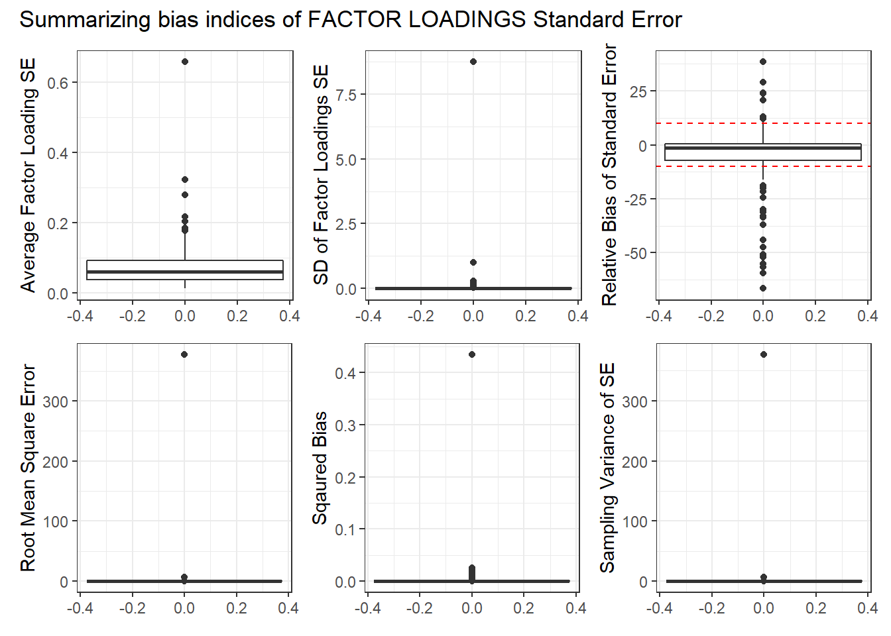
ggplot(sdat, aes(y=estMean))+
geom_boxplot()+
geom_hline(yintercept = 0.6, color="red")+
labs(y="Average Factor Loading SE",
title="FACTOR LOADINGS SE by Estimation Method",
subtitle="SE Estimates")+
facet_wrap(.~Estimator)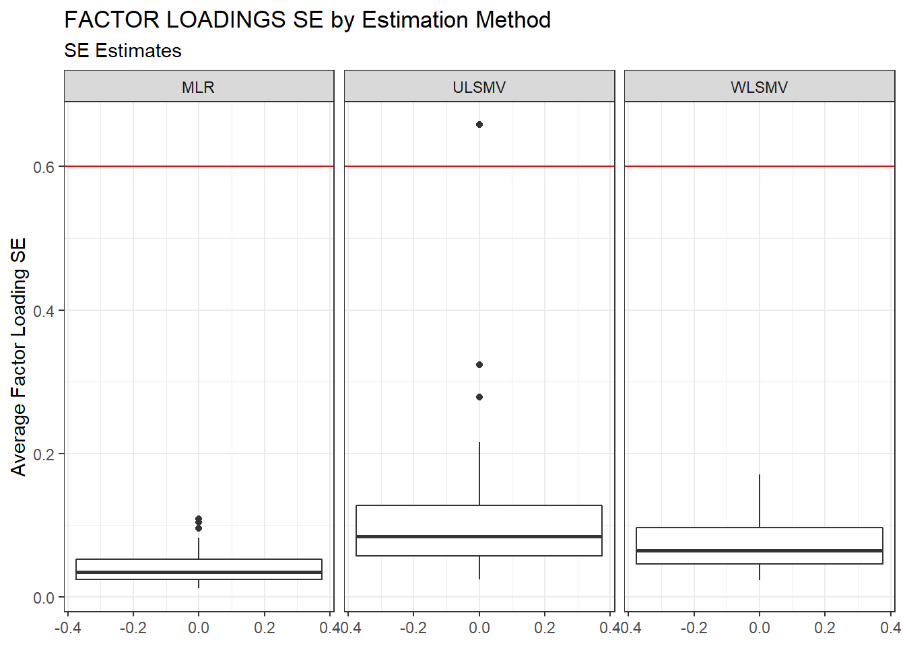
ggplot(sdat, aes(y=estSD))+
geom_boxplot()+
labs(y="SD of Factor Loadings",
title="FACTOR LOADINGS SE by Estimation Method",
subtitle="Standard Deviation of SE Estimates")+
facet_wrap(.~Estimator)ggplot(sdat, aes(y=RB))+
geom_boxplot()+
geom_hline(yintercept=-10, color="red", linetype="dashed")+
geom_hline(yintercept=10, color="red", linetype="dashed")+
labs(y="Relative Bias",
title="FACTOR LOADINGS SE by Estimation Method",
subtitle="Relative Bias of SE Estimates")+
facet_wrap(.~Estimator)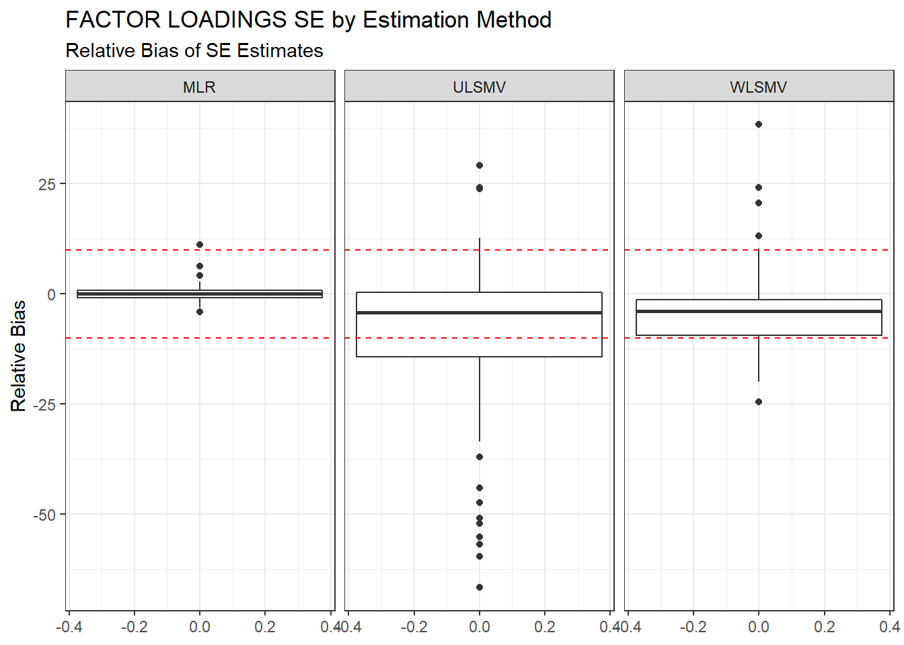
ggplot(sdat, aes(y=RMSE))+
geom_boxplot()+
labs(y="Root Mean Square Error",
title="FACTOR LOADINGS SE by Estimation Method",
subtitle="Root Mean Square Error of SE Estimates")+
facet_wrap(.~Estimator)ggplot(sdat, aes(y=Bias))+
geom_boxplot()+
labs(y="Sqaured Bias",
title="FACTOR LOADINGS SE by Estimation Method",
subtitle="Squared Bias of SE Estiamtes")+
facet_wrap(.~Estimator)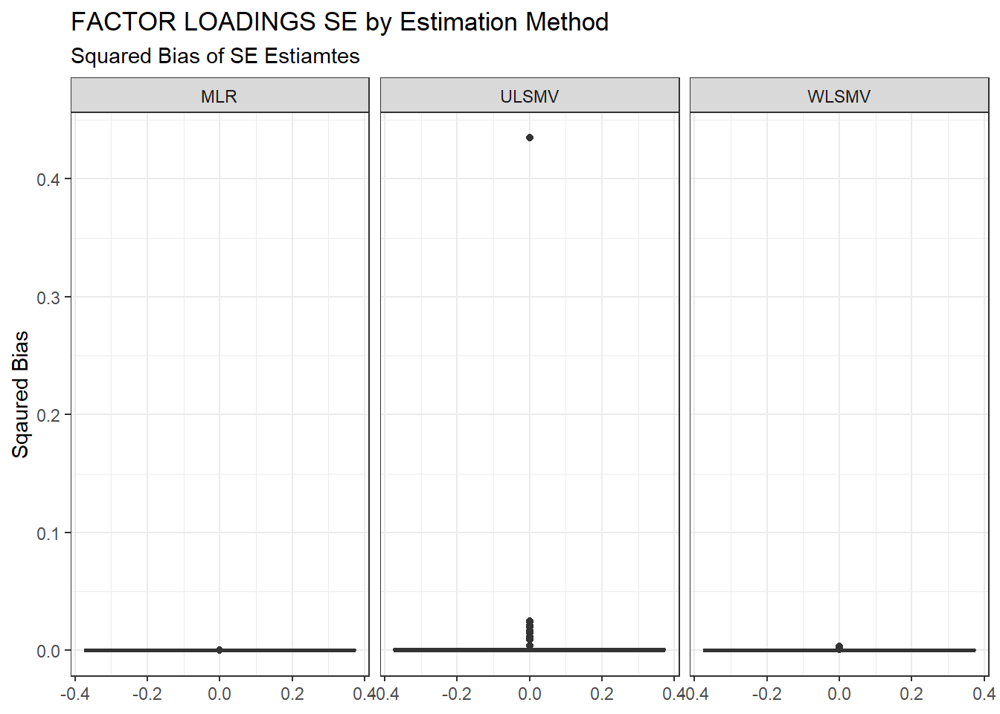
ggplot(sdat, aes(y=SampVar))+
geom_boxplot()+
labs(y="Sampling Variance",
title="FACTOR LOADINGS SE by Estimation Method",
subtitle="Sampling Variance of SE Estimates")+
facet_wrap(.~Estimator)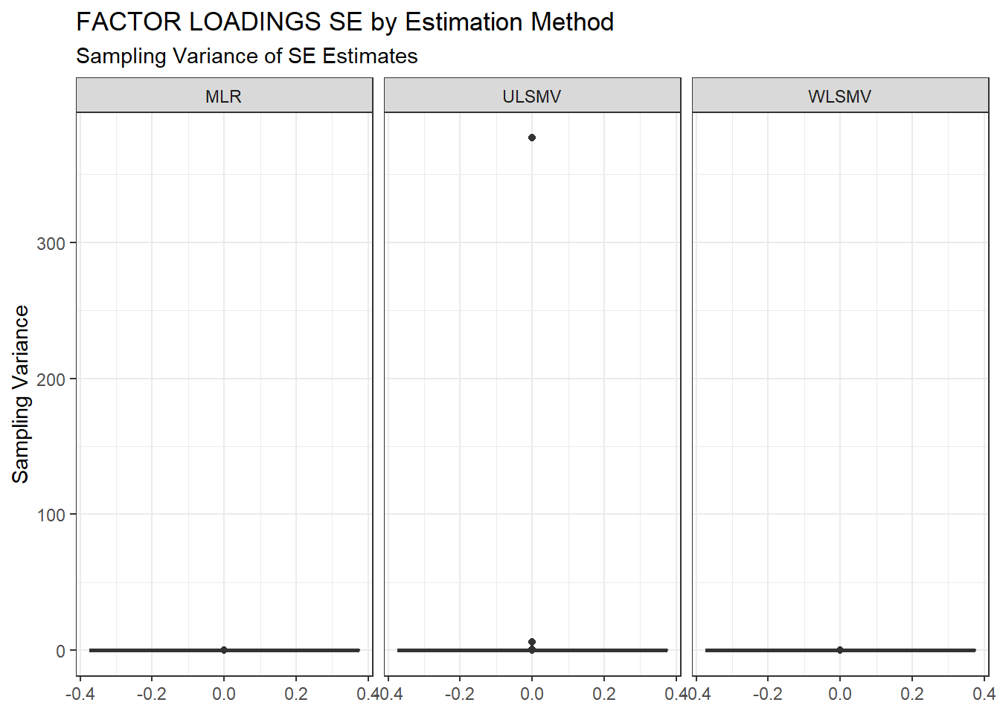
c <- sdat %>%
group_by(Estimator) %>%
summarise(est = mean(estMean),
RB = mean(RB),
RMSE = mean(RMSE),
Bias = mean(Bias),
SampVar =mean(SampVar))
kable(c, format='html', digits=4,
caption="Summary Indices of FACTOR LOADINGS Standard Error by Estimation Method") %>%
kable_styling(full_width = T)| Estimator | est | RB | RMSE | Bias | SampVar |
|---|---|---|---|---|---|
| MLR | 0.0399 | 0.158 | 0.0001 | 0.0000 | 0.0001 |
| ULSMV | 0.1033 | -9.966 | 5.3425 | 0.0088 | 5.3337 |
| WLSMV | 0.0754 | -3.943 | 0.0008 | 0.0002 | 0.0006 |
ggplot(sdat, aes(y=estMean))+
geom_boxplot()+
geom_hline(yintercept = 0.6, color="red")+
labs(y="Average Factor Loading",
title="FACTOR LOADINGS SE by Level-2 Sample Size",
subtitle="Estimates")+
facet_wrap(.~N2)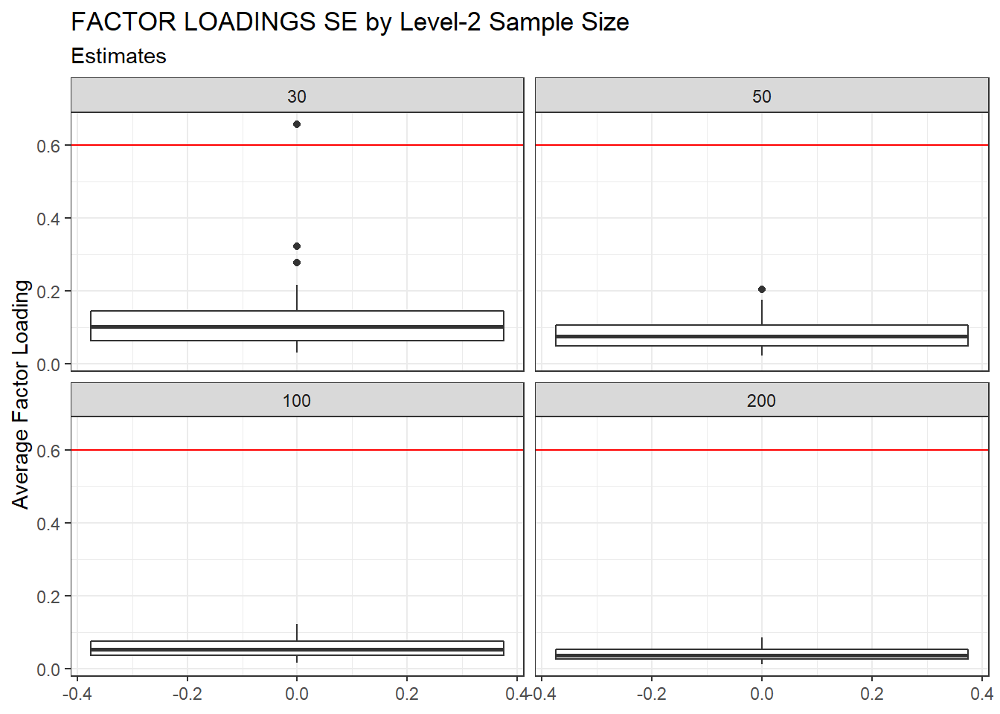
ggplot(sdat, aes(y=estSD))+
geom_boxplot()+
labs(y="SD of Factor Loadings",
title="FACTOR LOADINGS SE by Level-2 Sample Size",
subtitle="Standard Deviation of SE Estimates")+
facet_wrap(.~N2)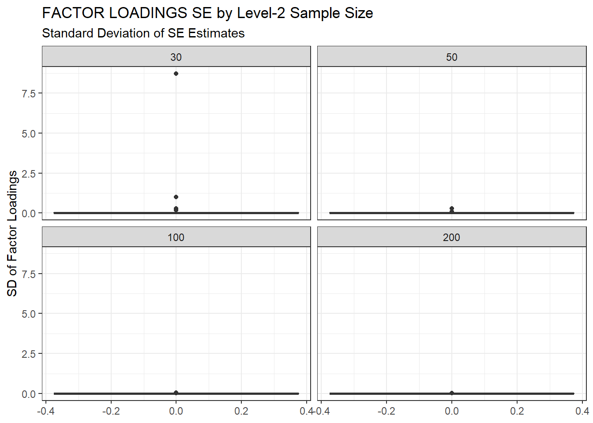
ggplot(sdat, aes(y=RB))+
geom_boxplot()+
geom_hline(yintercept=-10, color="red", linetype="dashed")+
geom_hline(yintercept=10, color="red", linetype="dashed")+
labs(y="Relative Bias",
title="FACTOR LOADINGS by Level-2 Sample Size",
subtitle="Relative Bias SE Estimates")+
facet_wrap(.~N2)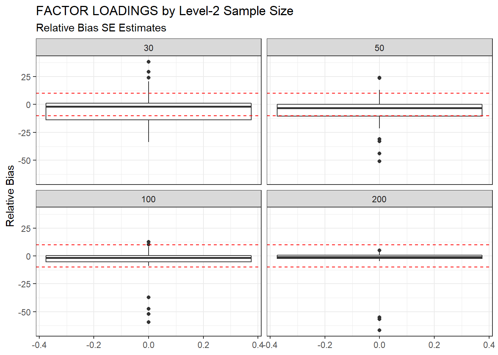
ggplot(sdat, aes(y=RMSE))+
geom_boxplot()+
labs(y="Root Mean Square Error",
title="FACTOR LOADINGS by Level-2 Sample Size",
subtitle="Root Mean Square Error")+
facet_wrap(.~N2)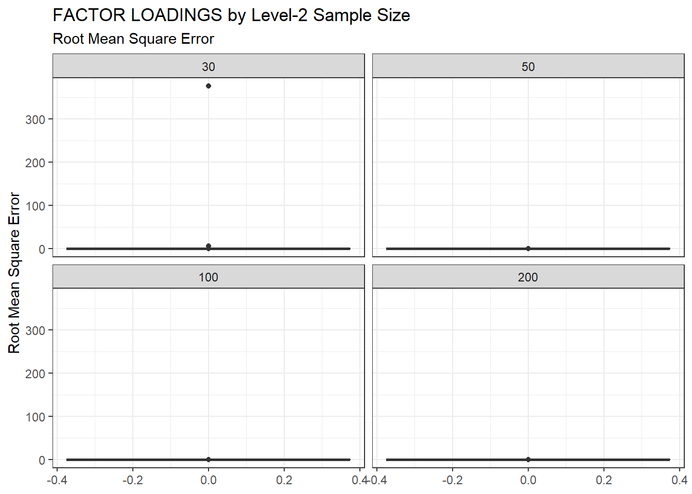
ggplot(sdat, aes(y=Bias))+
geom_boxplot()+
labs(y="Sqaured Bias",
title="FACTOR LOADINGS by Level-2 Sample Size",
subtitle="Squared Bias of SE Estimates")+
facet_wrap(.~N2)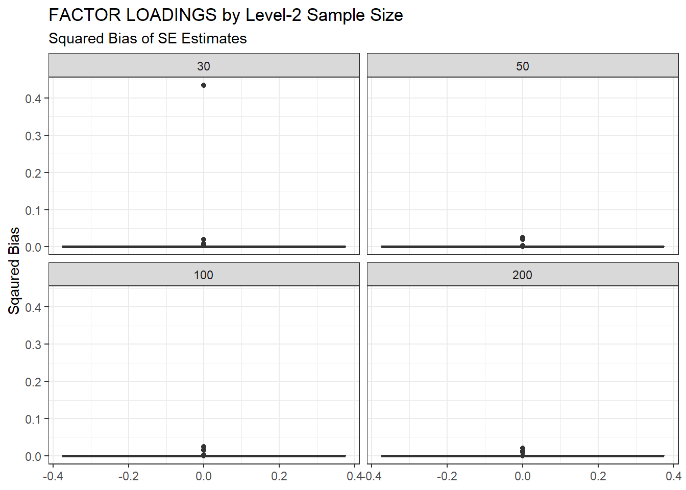
ggplot(sdat, aes(y=SampVar))+
geom_boxplot()+
labs(y="Sampling Variance of Estimates",
title="FACTOR LOADINGS by Level-2 Sample Size",
subtitle="Sampling Variance of SE Estimates")+
facet_wrap(.~N2)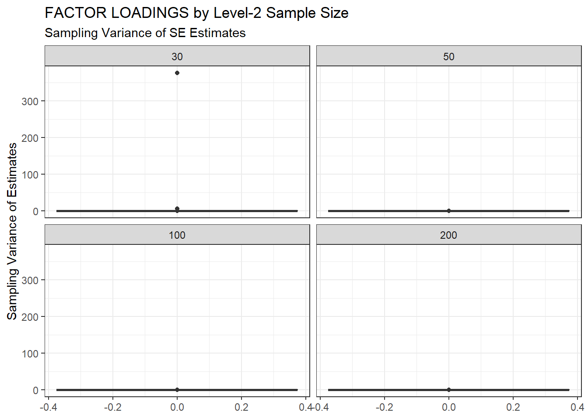
c <- sdat %>%
group_by(N2) %>%
summarise(est = mean(estMean),
RB = mean(RB),
RMSE = mean(RMSE),
Bias = mean(Bias),
SampVar =mean(SampVar))
kable(c, format='html', digits=3,
caption="Summary Indices of FACTOR LOADINGS by Level-2 Sample Size") %>%
kable_styling(full_width = T)| N2 | est | RB | RMSE | Bias | SampVar |
|---|---|---|---|---|---|
| 30 | 0.117 | -3.80 | 7.111 | 0.009 | 7.10 |
| 50 | 0.080 | -5.74 | 0.011 | 0.001 | 0.01 |
| 100 | 0.055 | -4.97 | 0.001 | 0.001 | 0.00 |
| 200 | 0.039 | -3.83 | 0.001 | 0.001 | 0.00 |
ggplot(sdat, aes(y=estMean))+
geom_boxplot()+
geom_hline(yintercept = 0.6, color="red")+
labs(y="Average Factor Loading",
title="FACTOR LOADINGS by Level-1",
subtitle="SE Estimates")+
facet_wrap(.~N1)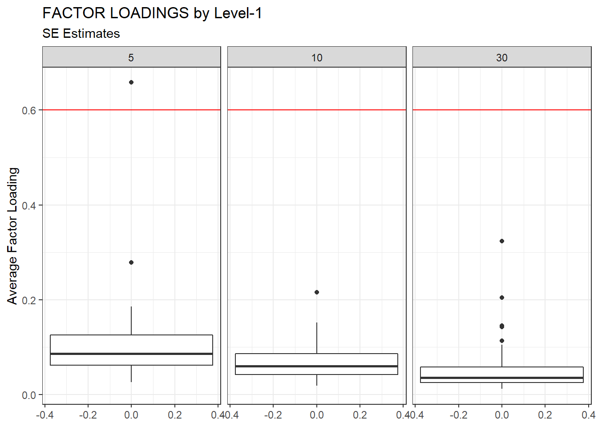
ggplot(sdat, aes(y=estSD))+
geom_boxplot()+
labs(y="SD of Factor Loadings",
title="FACTOR LOADINGS by Level-1 Sample Size",
subtitle="Standard Deviation of SE Estimates")+
facet_wrap(.~N1)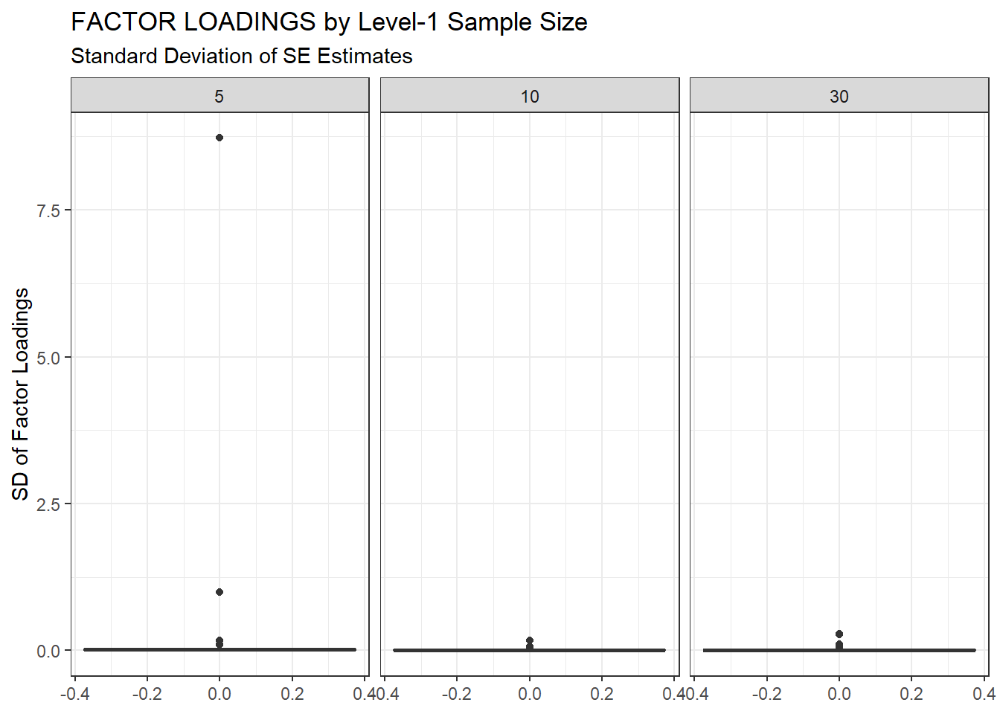
ggplot(sdat, aes(y=RB))+
geom_boxplot()+
geom_hline(yintercept=-10, color="red", linetype="dashed")+
geom_hline(yintercept=10, color="red", linetype="dashed")+
labs(y="Relative Bias",
title="FACTOR LOADINGS by Level-1 Sample Size",
subtitle="Relative Bias of SE Estimates")+
facet_wrap(.~N1)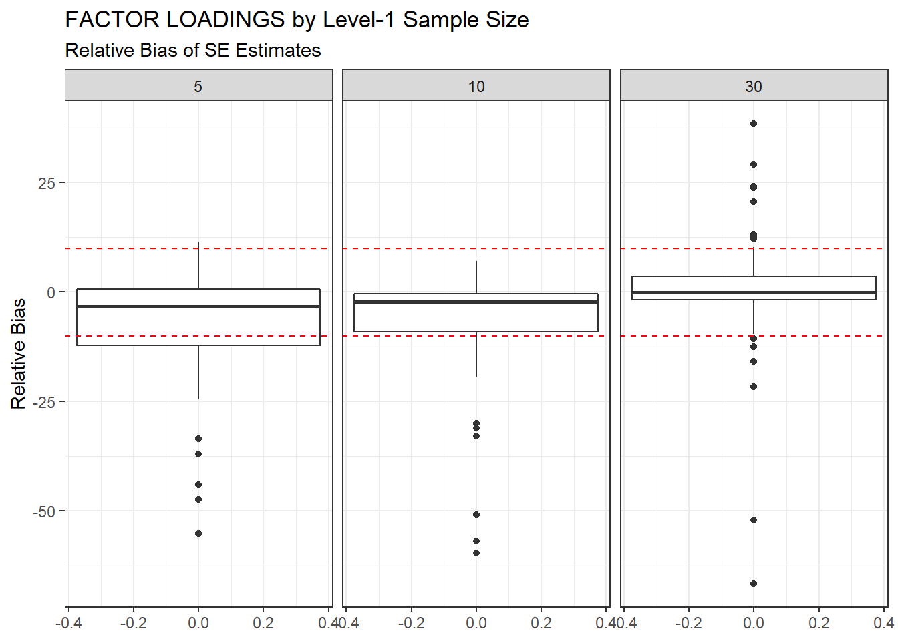
ggplot(sdat, aes(y=RMSE))+
geom_boxplot()+
labs(y="Root Mean Square Error",
title="FACTOR LOADINGS by Level-1 Sample Size",
subtitle="Root Mean Square Error")+
facet_wrap(.~N1)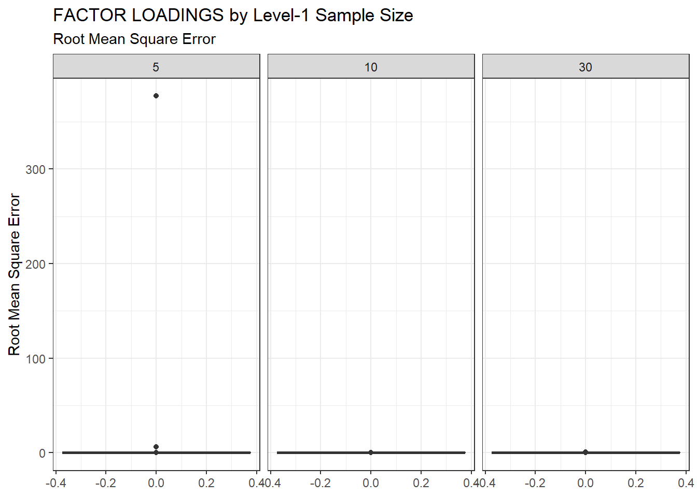
ggplot(sdat, aes(y=Bias))+
geom_boxplot()+
labs(y="Sqaured Bias",
title="FACTOR LOADINGS by Level-1 Sample Size",
subtitle="Squared Bias of SE Estimates")+
facet_wrap(.~N1)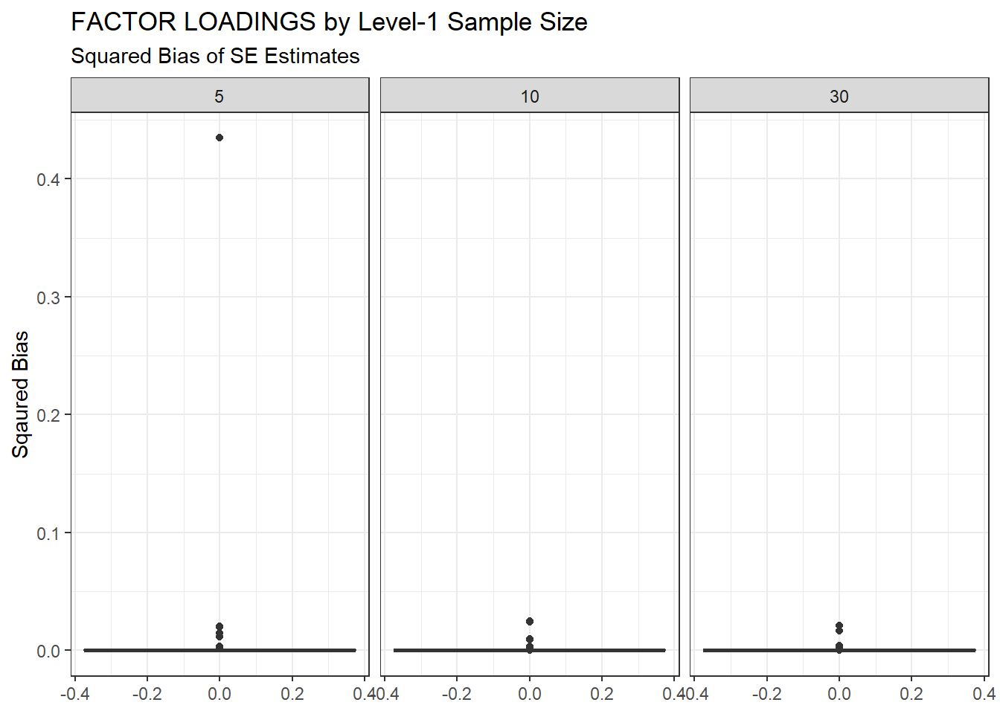
ggplot(sdat, aes(y=SampVar))+
geom_boxplot()+
labs(y="Sampling Variance of Estimates",
title="FACTOR LOADINGS by Level-1 Sample Size",
subtitle="Sampling Variance of SE Estimates")+
facet_wrap(.~N1)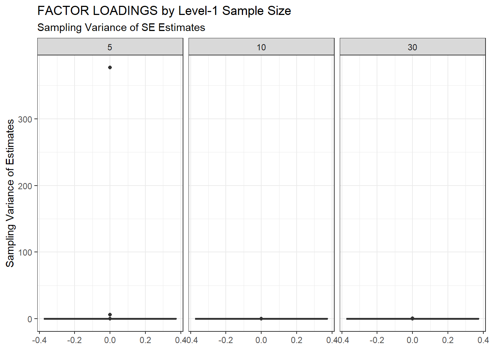
c <- sdat %>%
group_by(N1) %>%
summarise(est = mean(estMean),
RB = mean(RB),
RMSE = mean(RMSE),
Bias = mean(Bias),
SampVar =mean(SampVar))
kable(c, format='html', digits=3,
caption="Summary Indices of FACTOR LOADINGS by Level-1 Sample Size") %>%
kable_styling(full_width = T)| N1 | est | RB | RMSE | Bias | SampVar |
|---|---|---|---|---|---|
| 5 | 0.102 | -6.746 | 5.332 | 0.007 | 5.325 |
| 10 | 0.067 | -7.292 | 0.002 | 0.001 | 0.001 |
| 30 | 0.050 | 0.287 | 0.010 | 0.001 | 0.009 |
ggplot(sdat, aes(y=estMean))+
geom_boxplot()+
geom_hline(yintercept = 0.6, color="red")+
labs(y="Average Factor Loading",
title="FACTOR LOADINGS by ICC of Observed Variables",
subtitle="SE Estimates")+
facet_wrap(.~ICC_OV)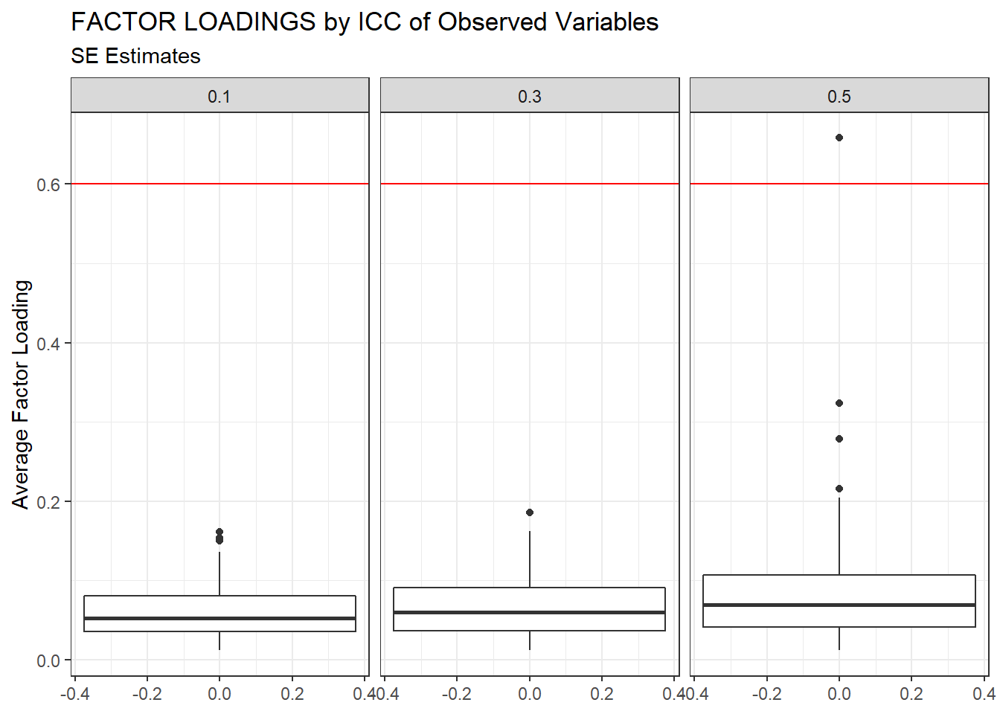
ggplot(sdat, aes(y=estSD))+
geom_boxplot()+
labs(y="SD of Factor Loadings",
title="FACTOR LOADINGS by ICC of Observed Variables",
subtitle="Standard Deviation of SE Estimates")+
facet_wrap(.~ICC_OV)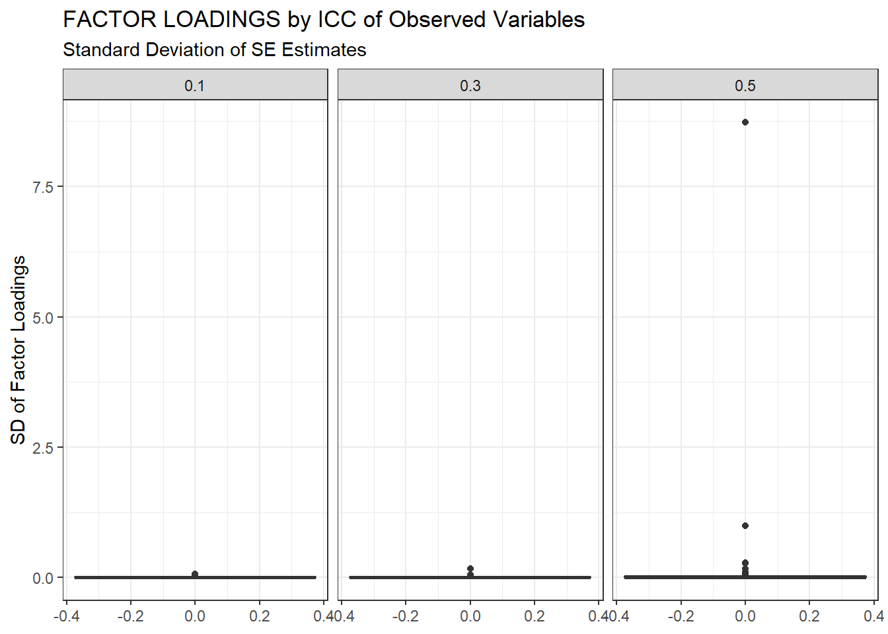
ggplot(sdat, aes(y=RB))+
geom_boxplot()+
geom_hline(yintercept=-10, color="red", linetype="dashed")+
geom_hline(yintercept=10, color="red", linetype="dashed")+
labs(y="Relative Bias",
title="FACTOR LOADINGS by ICC of Observed Variables",
subtitle="Relative Bias of SE Estimates")+
facet_wrap(.~ICC_OV)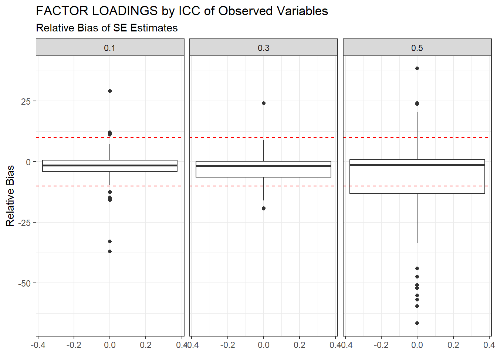
ggplot(sdat, aes(y=RMSE))+
geom_boxplot()+
labs(y="Root Mean Square Error",
title="FACTOR LOADINGS by ICC of Observed Variables",
subtitle="Root Mean Square Error of SE Estimates")+
facet_wrap(.~ICC_OV)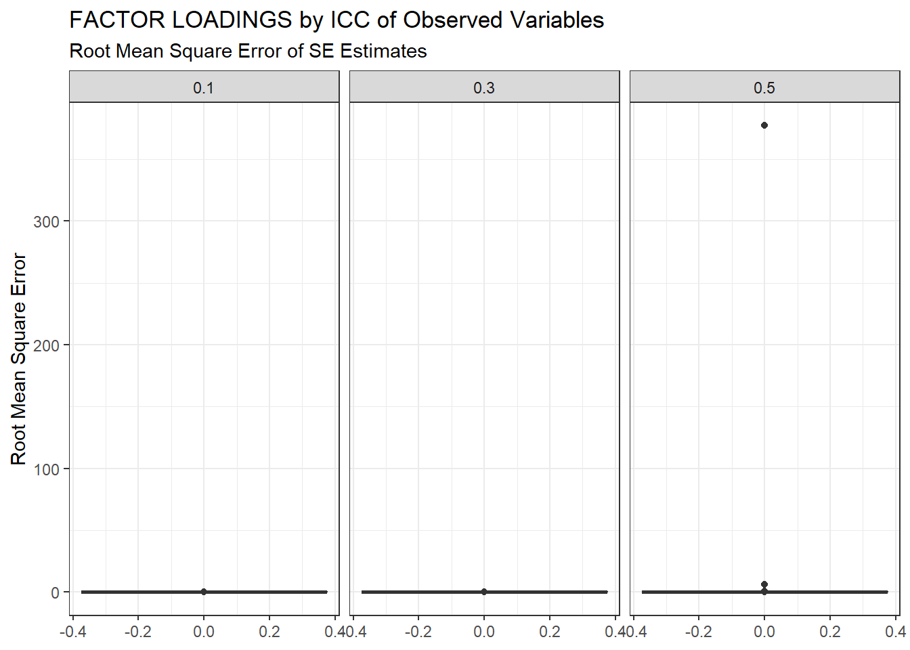
ggplot(sdat, aes(y=Bias))+
geom_boxplot()+
labs(y="Sqaured Bias",
title="FACTOR LOADINGS by ICC of Observed Variables",
subtitle="Squared Bias of SE Estimates")+
facet_wrap(.~ICC_OV)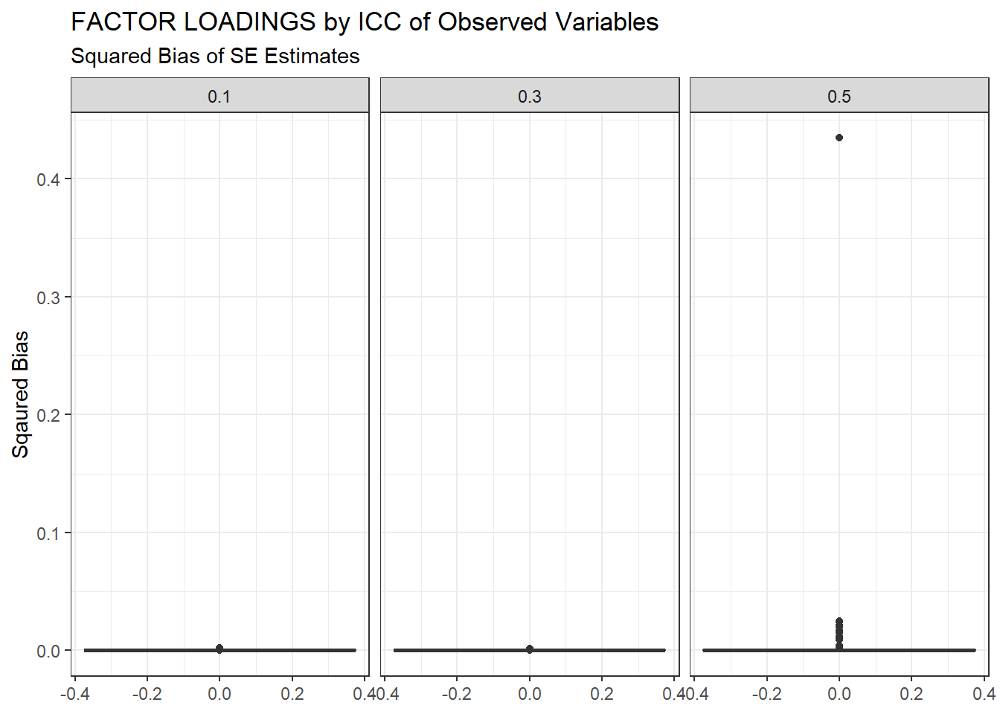
ggplot(sdat, aes(y=SampVar))+
geom_boxplot()+
labs(y="Sampling Variance of Estimates",
title="FACTOR LOADINGS by ICC of Observed Variables",
subtitle="Sampling Variance of SE Estimates")+
facet_wrap(.~ICC_OV)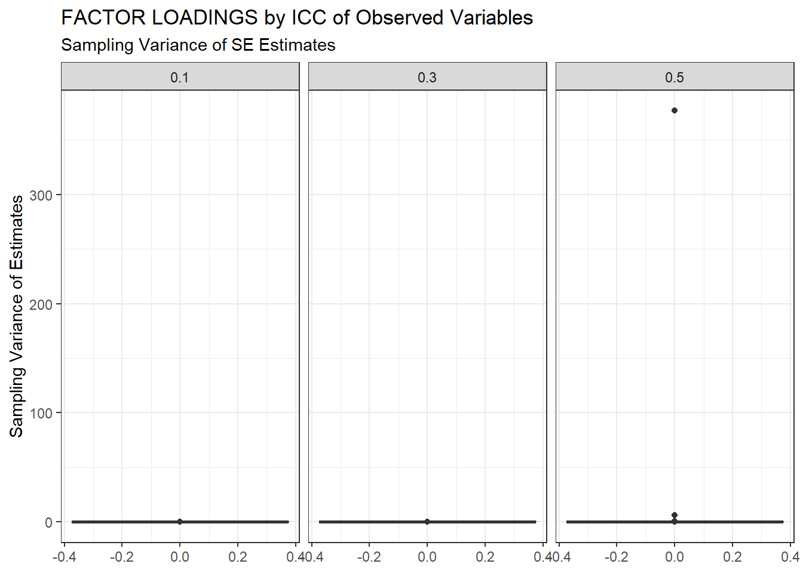
c <- sdat %>%
group_by(ICC_OV) %>%
summarise(est = mean(estMean),
RB = mean(RB),
RMSE = mean(RMSE),
Bias = mean(Bias),
SampVar =mean(SampVar))
kable(c, format='html', digits=3, caption="Summary Indices of FACTOR LOADINGS by ICC of Observed Variables") %>%
kable_styling(full_width = T)| ICC_OV | est | RB | RMSE | Bias | SampVar |
|---|---|---|---|---|---|
| 0.1 | 0.061 | -2.47 | 0.001 | 0.000 | 0.000 |
| 0.3 | 0.068 | -3.34 | 0.002 | 0.000 | 0.001 |
| 0.5 | 0.090 | -7.93 | 5.341 | 0.009 | 5.333 |
ggplot(sdat, aes(y=estMean))+
geom_boxplot()+
geom_hline(yintercept = 0.6, color="red")+
labs(y="Average Factor Loading",
title="FACTOR LOADINGS by ICC of Latent Variables",
subtitle="SE Estimates")+
facet_wrap(.~ICC_LV)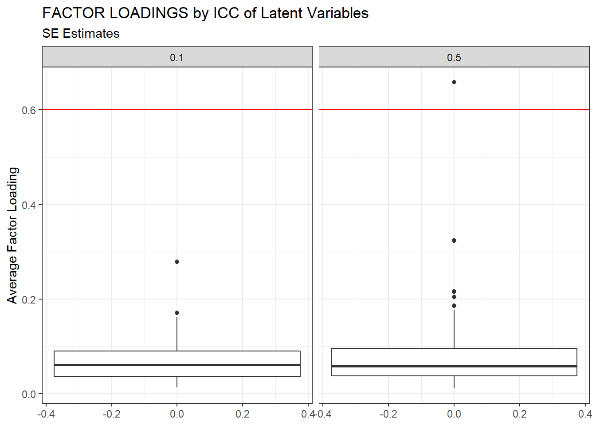
ggplot(sdat, aes(y=estSD))+
geom_boxplot()+
labs(y="SD of Factor Loadings",
title="FACTOR LOADINGS by ICC of Latent Variables",
subtitle="Standard Deviation of SE Estimates")+
facet_wrap(.~ICC_LV)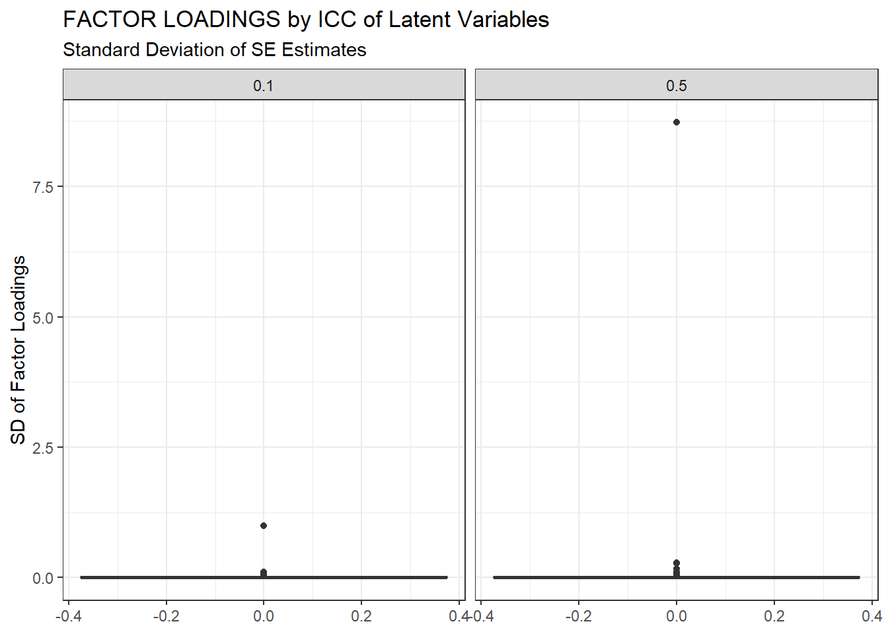
ggplot(sdat, aes(y=RB))+
geom_boxplot()+
geom_hline(yintercept=-10, color="red", linetype="dashed")+
geom_hline(yintercept=10, color="red", linetype="dashed")+
labs(y="Relative Bias",
title="FACTOR LOADINGS by ICC of Latent Variables",
subtitle="Relative Bias of SE Estimates")+
facet_wrap(.~ICC_LV)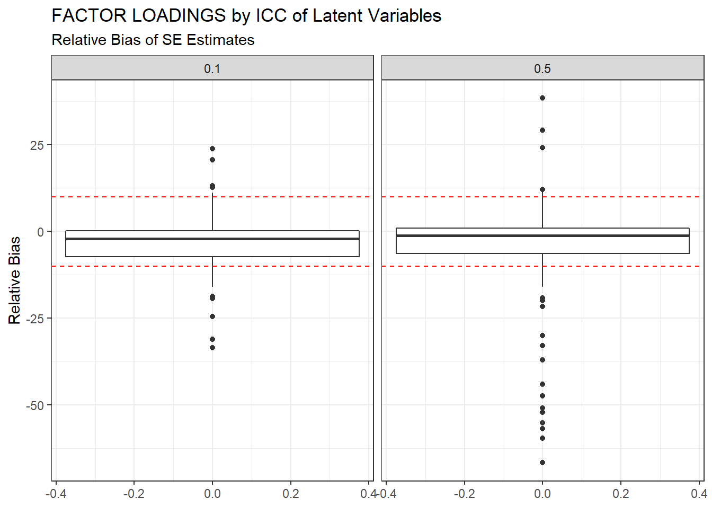
ggplot(sdat, aes(y=RMSE))+
geom_boxplot()+
labs(y="Root Mean Square Error",
title="FACTOR LOADINGS by ICC of Latent Variables",
subtitle="Root Mean Square Error of SE Estimates")+
facet_wrap(.~ICC_LV)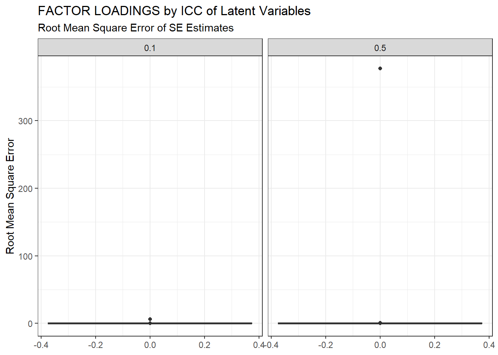
ggplot(sdat, aes(y=Bias))+
geom_boxplot()+
labs(y="Sqaured Bias",
title="FACTOR LOADINGS by ICC of Latent Variables",
subtitle="Squared Bias of SE Estimates")+
facet_wrap(.~ICC_LV)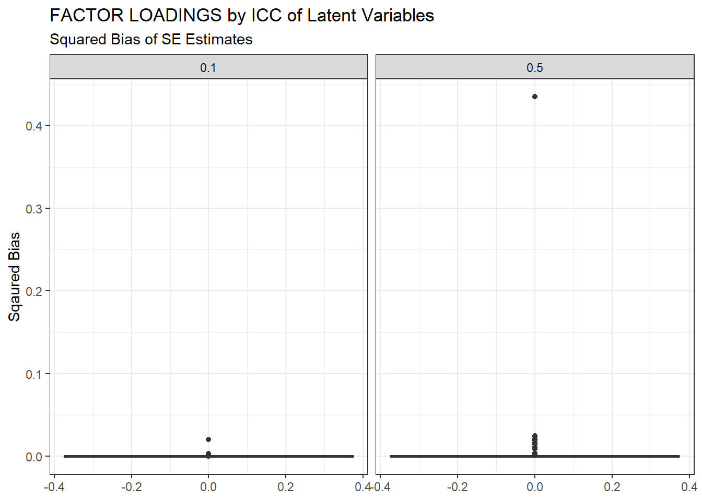
ggplot(sdat, aes(y=SampVar))+
geom_boxplot()+
labs(y="Sampling Variance of Estimates",
title="FACTOR LOADINGS by ICC of Latent Variables",
subtitle="Sampling Variance of SE Estimates")+
facet_wrap(.~ICC_LV)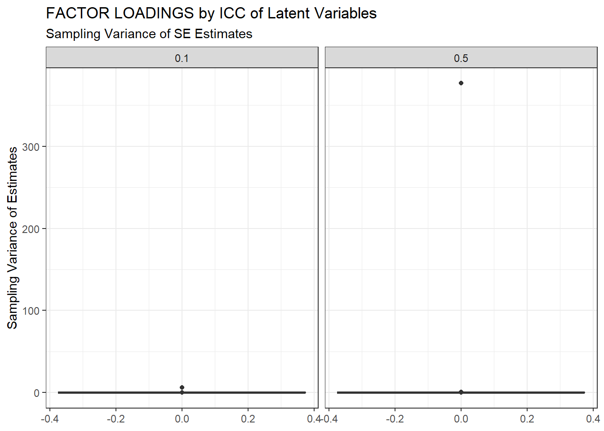
c <- sdat %>%
group_by(ICC_LV) %>%
summarise(est = mean(estMean),
RB = mean(RB),
RMSE = mean(RMSE),
Bias = mean(Bias),
SampVar =mean(SampVar))
kable(c, format='html', digits=3,
caption="Summary Indices of FACTOR LOADINGS by ICC of Latent Variables") %>%
kable_styling(full_width = T)| ICC_LV | est | RB | RMSE | Bias | SampVar |
|---|---|---|---|---|---|
| 0.1 | 0.069 | -3.80 | 0.06 | 0.000 | 0.06 |
| 0.5 | 0.077 | -5.37 | 3.50 | 0.006 | 3.50 |
ggplot(sdat, aes(y=estMean))+
geom_boxplot()+
geom_hline(yintercept = 0.6, color="red")+
labs(y="Average Factor Loading")+
facet_grid(N2~Estimator)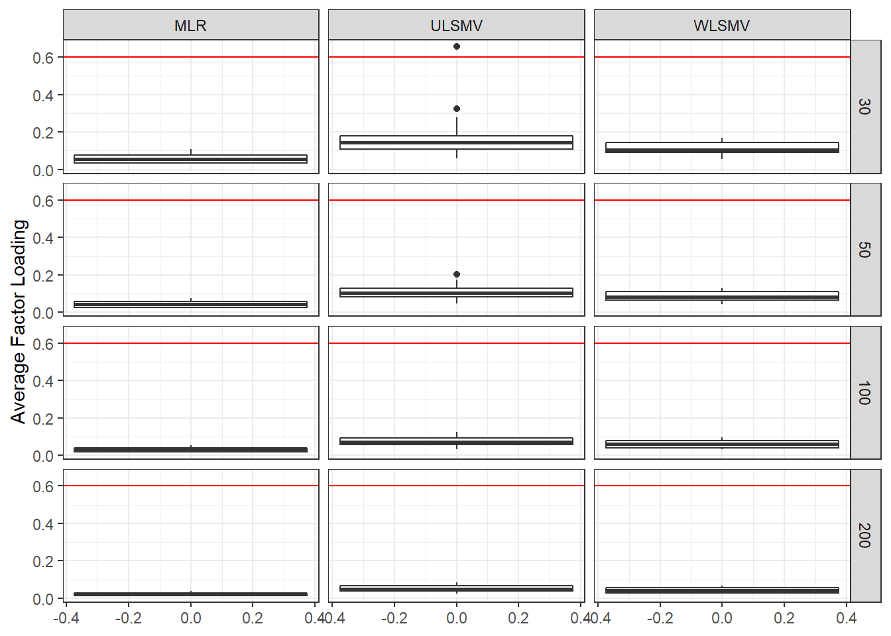
ggplot(sdat, aes(y=RB))+
geom_boxplot()+
geom_hline(yintercept=-10, color="red", linetype="dashed")+
geom_hline(yintercept=10, color="red", linetype="dashed")+
labs(y="Relative Bias")+
facet_grid(N2~Estimator)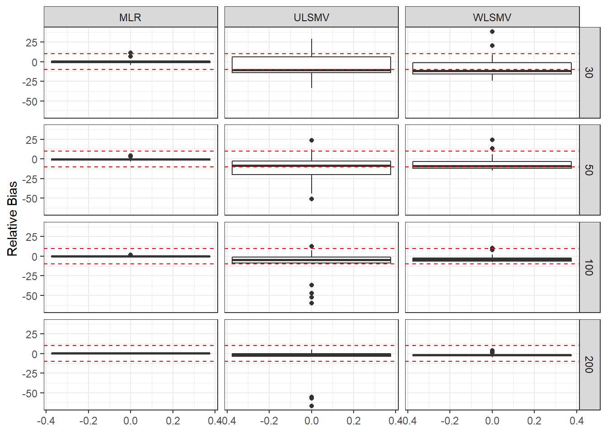
ggplot(sdat, aes(y=RMSE))+
geom_boxplot()+
labs(y="Root Mean Square Error")+
facet_grid(N2~Estimator)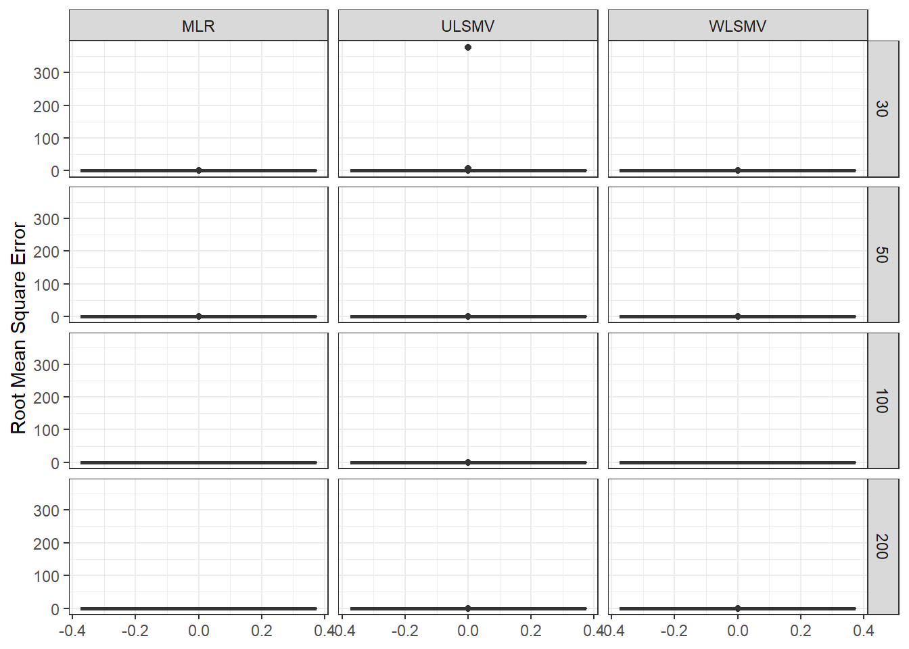
c <- sdat %>%
group_by(Estimator, N2) %>%
summarise(est = mean(estMean),
RB = mean(RB),
RMSE = mean(RMSE),
Bias = mean(Bias),
SampVar =mean(SampVar))
c1 <- cbind(c[ c$Estimator == 'MLR', c( 'N2', 'est', 'RB', 'RMSE')],
c[ c$Estimator == 'ULSMV', c('est', 'RB', 'RMSE')],
c[ c$Estimator == 'WLSMV', c('est', 'RB', 'RMSE')])
colnames(c1) <- c('N2', rep(c('est', 'RB', 'RMSE'), 3))
kable(c1, format='html', digits=3, row.names = F) %>%
kable_styling(full_width = T) %>%
add_header_above(c(' '=1, 'MLR'=3, 'ULSMV'=3, 'WLSMV'=3))| N2 | est | RB | RMSE | est | RB | RMSE | est | RB | RMSE |
|---|---|---|---|---|---|---|---|---|---|
| 30 | 0.060 | 0.475 | 0 | 0.180 | -5.17 | 21.331 | 0.112 | -6.71 | 0.003 |
| 50 | 0.045 | -0.233 | 0 | 0.109 | -12.10 | 0.033 | 0.086 | -4.87 | 0.001 |
| 100 | 0.032 | 0.164 | 0 | 0.073 | -12.34 | 0.004 | 0.061 | -2.73 | 0.000 |
| 200 | 0.022 | 0.223 | 0 | 0.051 | -10.25 | 0.002 | 0.043 | -1.46 | 0.000 |
ggplot(sdat, aes(y=estMean))+
geom_boxplot()+
geom_hline(yintercept = 0.6, color="red")+
labs(y="Average Factor Loading")+
facet_grid(N1~Estimator)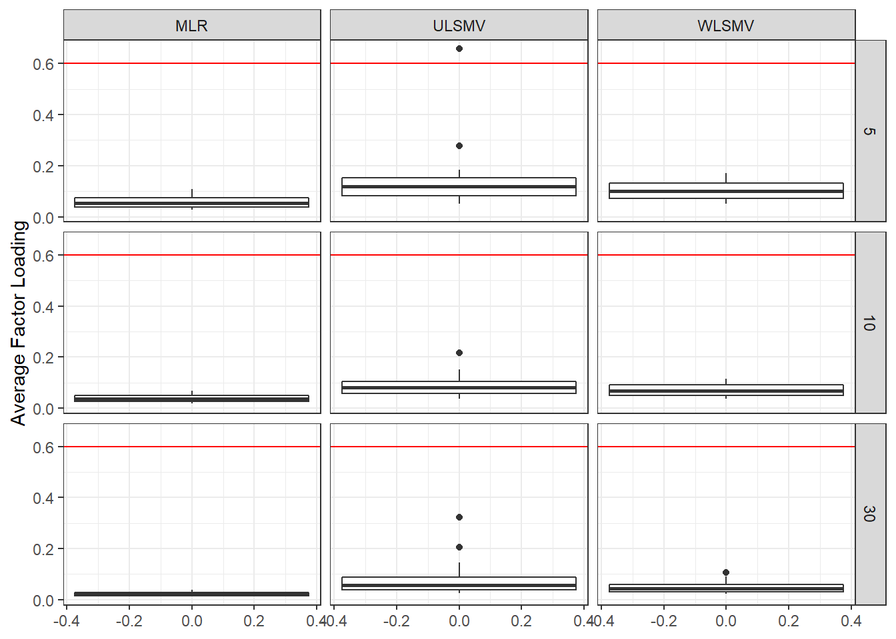
ggplot(sdat, aes(y=RB))+
geom_boxplot()+
geom_hline(yintercept=-10, color="red", linetype="dashed")+
geom_hline(yintercept=10, color="red", linetype="dashed")+
labs(y="Relative Bias")+
facet_grid(N1~Estimator)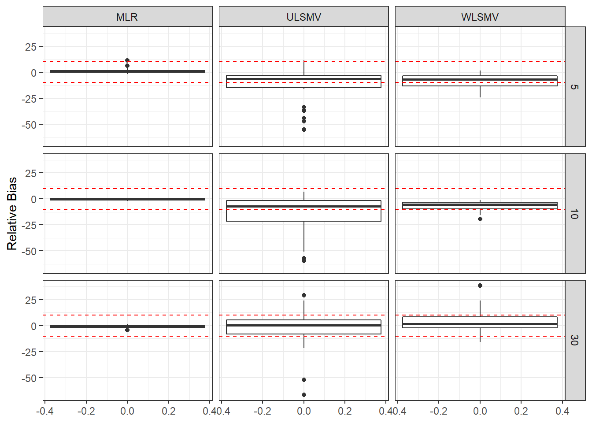
ggplot(sdat, aes(y=RMSE))+
geom_boxplot()+
labs(y="Root Mean Square Error")+
facet_grid(N1~Estimator)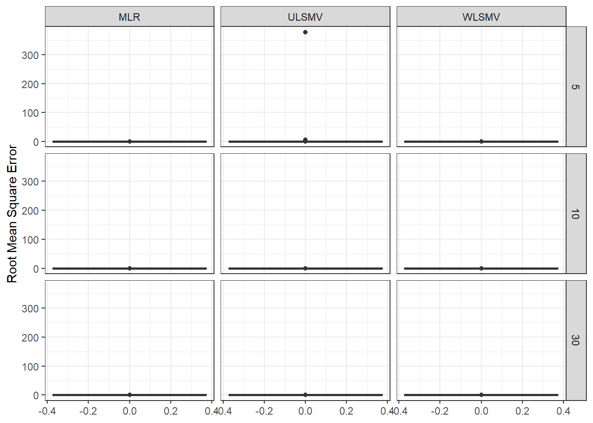
c <- sdat %>%
group_by(Estimator, N1) %>%
summarise(est = mean(estMean),
RB = mean(RB),
RMSE = mean(RMSE),
Bias = mean(Bias),
SampVar =mean(SampVar))
c1 <- cbind(c[ c$Estimator == 'MLR', c( 'N1', 'est', 'RB', 'RMSE')],
c[ c$Estimator == 'ULSMV', c('est', 'RB', 'RMSE')],
c[ c$Estimator == 'WLSMV', c('est', 'RB', 'RMSE')])
colnames(c1) <- c('N1', rep(c('est', 'RB', 'RMSE'), 3))
kable(c1, format='html', digits=3, row.names = F) %>%
kable_styling(full_width = T) %>%
add_header_above(c(' '=1, 'MLR'=3, 'ULSMV'=3, 'WLSMV'=3))| N1 | est | RB | RMSE | est | RB | RMSE | est | RB | RMSE |
|---|---|---|---|---|---|---|---|---|---|
| 5 | 0.058 | 1.414 | 0 | 0.141 | -12.96 | 15.993 | 0.106 | -8.69 | 0.002 |
| 10 | 0.039 | -0.244 | 0 | 0.089 | -14.50 | 0.006 | 0.072 | -7.13 | 0.000 |
| 30 | 0.022 | -0.698 | 0 | 0.080 | -2.44 | 0.028 | 0.048 | 3.99 | 0.000 |
ggplot(sdat, aes(y=estMean,x=N1, group=N1))+
geom_boxplot()+
geom_hline(yintercept = 0.6, color="red")+
labs(y="Average Factor Loading")+
facet_grid(N2~Estimator)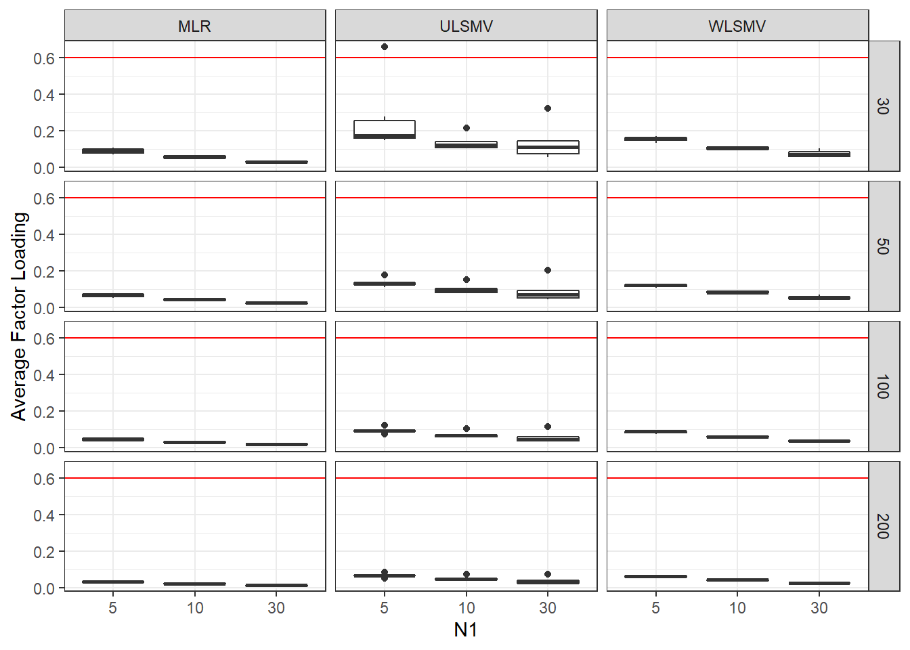
ggplot(sdat, aes(y=RB,x=N1, group=N1))+
geom_boxplot()+
geom_hline(yintercept=-10, color="red", linetype="dashed")+
geom_hline(yintercept=10, color="red", linetype="dashed")+
labs(y="Relative Bias")+
facet_grid(N2~Estimator)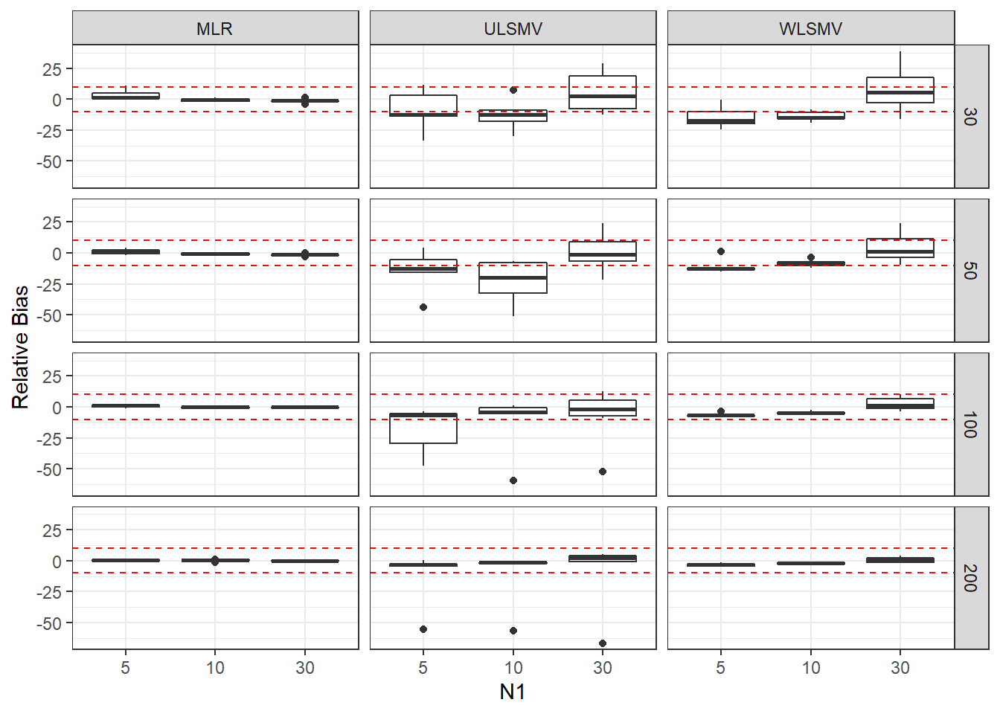
ggplot(sdat, aes(y=RMSE,x=N1, group=N1))+
geom_boxplot()+
labs(y="Root Mean Square Error")+
facet_grid(N2~Estimator)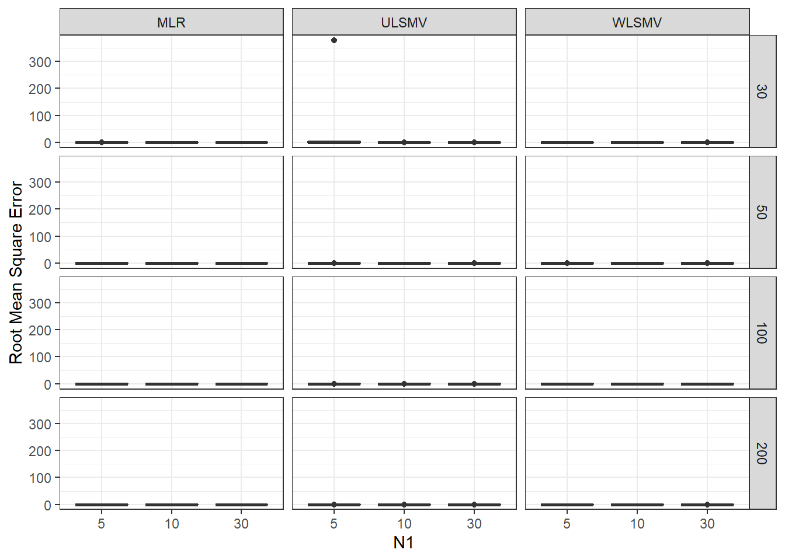
c <- sdat %>%
group_by(Estimator, N2, N1) %>%
summarise(est = mean(estMean),
RB = mean(RB),
RMSE = mean(RMSE),
Bias = mean(Bias),
SampVar =mean(SampVar))
c1 <- cbind(c[ c$Estimator == 'MLR', c( 'N2','N1', 'est', 'RB', 'RMSE')],
c[ c$Estimator == 'ULSMV', c('est', 'RB', 'RMSE')],
c[ c$Estimator == 'WLSMV', c('est', 'RB', 'RMSE')])
colnames(c1) <- c('N2','N1', rep(c('est', 'RB', 'RMSE'), 3))
kable(c1, format='html', digits=3, row.names = F) %>%
kable_styling(full_width = T) %>%
add_header_above(c(' '=2, 'MLR'=3, 'ULSMV'=3, 'WLSMV'=3))| N2 | N1 | est | RB | RMSE | est | RB | RMSE | est | RB | RMSE |
|---|---|---|---|---|---|---|---|---|---|---|
| 30 | 5 | 0.090 | 3.494 | 0.001 | 0.266 | -8.874 | 63.958 | 0.155 | -14.645 | 0.006 |
| 30 | 10 | 0.058 | -0.665 | 0.000 | 0.136 | -12.542 | 0.009 | 0.105 | -13.724 | 0.001 |
| 30 | 30 | 0.033 | -1.403 | 0.000 | 0.137 | 5.906 | 0.025 | 0.075 | 8.241 | 0.001 |
| 50 | 5 | 0.066 | 1.110 | 0.000 | 0.136 | -14.133 | 0.008 | 0.121 | -10.668 | 0.001 |
| 50 | 10 | 0.045 | -0.507 | 0.000 | 0.101 | -22.941 | 0.009 | 0.083 | -8.315 | 0.000 |
| 50 | 30 | 0.026 | -1.301 | 0.000 | 0.090 | 0.763 | 0.082 | 0.055 | 4.363 | 0.000 |
| 100 | 5 | 0.046 | 0.795 | 0.000 | 0.095 | -17.668 | 0.005 | 0.086 | -6.378 | 0.000 |
| 100 | 10 | 0.031 | -0.138 | 0.000 | 0.070 | -11.947 | 0.004 | 0.060 | -4.435 | 0.000 |
| 100 | 30 | 0.018 | -0.164 | 0.000 | 0.055 | -7.413 | 0.003 | 0.037 | 2.621 | 0.000 |
| 200 | 5 | 0.032 | 0.258 | 0.000 | 0.067 | -11.187 | 0.002 | 0.062 | -3.054 | 0.000 |
| 200 | 10 | 0.022 | 0.335 | 0.000 | 0.050 | -10.557 | 0.002 | 0.043 | -2.067 | 0.000 |
| 200 | 30 | 0.013 | 0.075 | 0.000 | 0.037 | -9.000 | 0.004 | 0.025 | 0.749 | 0.000 |
sdat <- filter(result, Variable %like% 'lambda')
c <- sdat %>%
group_by(Estimator, N2, N1) %>%
summarise(mu = weighted.mean(muRE, wi, na.rm=T),
mw = weighted.mean(mwRE, wi, na.rm=T),
uw = weighted.mean(uwRE, wi, na.rm=T))
c1 <- cbind(c[ c$Estimator == 'MLR', c( 'N2','N1', 'mu', 'mw', 'uw')])
colnames(c1) <- c('N2','N1',c('MLR/ULSMV', 'MLR/WLSMV', 'ULSMV/WLSMV'))
kable(c1, format='html', digits=3, row.names = F) %>%
kable_styling(full_width = T)| N2 | N1 | MLR/ULSMV | MLR/WLSMV | ULSMV/WLSMV |
|---|---|---|---|---|
| 30 | 5 | 0.776 | 0.887 | 41.19 |
| 30 | 10 | 0.290 | 0.449 | 2.76 |
| 30 | 30 | 0.202 | 0.389 | 3.33 |
| 50 | 5 | 0.341 | 0.520 | 2.50 |
| 50 | 10 | 0.248 | 0.482 | 4.43 |
| 50 | 30 | 0.233 | 0.368 | 4.24 |
| 100 | 5 | 0.276 | 0.442 | 3.58 |
| 100 | 10 | 0.320 | 0.471 | 5.01 |
| 100 | 30 | 0.268 | 0.405 | 4.56 |
| 200 | 5 | 0.326 | 0.423 | 4.23 |
| 200 | 10 | 0.347 | 0.476 | 6.13 |
| 200 | 30 | 0.310 | 0.447 | 8.76 |
c <- sdat %>%
group_by(Estimator, N2, N1, ICC_OV, ICC_LV) %>%
summarise(mu = weighted.mean(muRE, wi),
mw = weighted.mean(mwRE, wi),
uw = weighted.mean(uwRE, wi))
c1 <- cbind(c[ c$Estimator == 'MLR', c( 'N2','N1','ICC_OV', 'ICC_LV', 'mu', 'mw', 'uw')])
colnames(c1) <- c('N2','N1', 'ICC_OV', 'ICC_LV',c('MLR/ULSMV', 'MLR/WLSMV', 'ULSMV/WLSMV'))
kable(c1, format='html', digits=3, row.names = F) %>%
kable_styling(full_width = T)| N2 | N1 | ICC_OV | ICC_LV | MLR/ULSMV | MLR/WLSMV | ULSMV/WLSMV |
|---|---|---|---|---|---|---|
| 30 | 5 | 0.1 | 0.1 | 3.338 | 2.869 | 0.938 |
| 30 | 5 | 0.1 | 0.5 | 1.040 | 1.547 | 1.613 |
| 30 | 5 | 0.3 | 0.1 | 0.662 | 0.734 | 1.114 |
| 30 | 5 | 0.3 | 0.5 | 0.195 | 0.340 | 2.979 |
| 30 | 5 | 0.5 | 0.1 | 0.096 | 0.293 | 11.694 |
| 30 | 5 | 0.5 | 0.5 | 0.054 | 0.287 | 142.847 |
| 30 | 10 | 0.1 | 0.1 | 0.646 | 0.528 | 0.819 |
| 30 | 10 | 0.1 | 0.5 | 0.556 | 0.974 | 1.823 |
| 30 | 10 | 0.3 | 0.1 | 0.375 | 0.381 | 1.023 |
| 30 | 10 | 0.3 | 0.5 | 0.183 | 0.354 | 2.003 |
| 30 | 10 | 0.5 | 0.1 | 0.171 | 0.369 | 2.526 |
| 30 | 10 | 0.5 | 0.5 | 0.050 | 0.308 | 6.320 |
| 30 | 30 | 0.1 | 0.1 | 0.476 | 0.421 | 0.884 |
| 30 | 30 | 0.1 | 0.5 | 0.216 | 0.884 | 4.036 |
| 30 | 30 | 0.3 | 0.1 | 0.346 | 0.431 | 1.249 |
| 30 | 30 | 0.3 | 0.5 | 0.077 | 0.258 | 3.325 |
| 30 | 30 | 0.5 | 0.1 | 0.059 | 0.159 | 3.698 |
| 30 | 30 | 0.5 | 0.5 | 0.020 | 0.102 | 6.272 |
| 50 | 5 | 0.1 | 0.1 | 0.722 | 0.776 | 1.387 |
| 50 | 5 | 0.1 | 0.5 | 0.721 | 1.124 | 1.652 |
| 50 | 5 | 0.3 | 0.1 | 0.403 | 0.466 | 1.159 |
| 50 | 5 | 0.3 | 0.5 | 0.215 | 0.357 | 1.679 |
| 50 | 5 | 0.5 | 0.1 | 0.273 | 0.447 | 1.665 |
| 50 | 5 | 0.5 | 0.5 | 0.057 | 0.299 | 5.510 |
| 50 | 10 | 0.1 | 0.1 | 0.573 | 0.511 | 0.887 |
| 50 | 10 | 0.1 | 0.5 | 0.176 | 0.930 | 5.319 |
| 50 | 10 | 0.3 | 0.1 | 0.416 | 0.405 | 0.968 |
| 50 | 10 | 0.3 | 0.5 | 0.195 | 0.373 | 1.962 |
| 50 | 10 | 0.5 | 0.1 | 0.113 | 0.373 | 5.555 |
| 50 | 10 | 0.5 | 0.5 | 0.032 | 0.332 | 11.040 |
| 50 | 30 | 0.1 | 0.1 | 0.499 | 0.456 | 0.914 |
| 50 | 30 | 0.1 | 0.5 | 0.242 | 0.624 | 2.667 |
| 50 | 30 | 0.3 | 0.1 | 0.409 | 0.456 | 1.117 |
| 50 | 30 | 0.3 | 0.5 | 0.105 | 0.296 | 2.806 |
| 50 | 30 | 0.5 | 0.1 | 0.094 | 0.198 | 2.096 |
| 50 | 30 | 0.5 | 0.5 | 0.023 | 0.122 | 14.391 |
| 100 | 5 | 0.1 | 0.1 | 0.536 | 0.494 | 0.922 |
| 100 | 5 | 0.1 | 0.5 | 0.139 | 0.721 | 5.172 |
| 100 | 5 | 0.3 | 0.1 | 0.432 | 0.444 | 1.024 |
| 100 | 5 | 0.3 | 0.5 | 0.275 | 0.377 | 1.381 |
| 100 | 5 | 0.5 | 0.1 | 0.314 | 0.369 | 1.208 |
| 100 | 5 | 0.5 | 0.5 | 0.038 | 0.305 | 9.981 |
| 100 | 10 | 0.1 | 0.1 | 0.494 | 0.482 | 0.974 |
| 100 | 10 | 0.1 | 0.5 | 0.405 | 0.666 | 1.640 |
| 100 | 10 | 0.3 | 0.1 | 0.486 | 0.492 | 1.011 |
| 100 | 10 | 0.3 | 0.5 | 0.228 | 0.424 | 1.864 |
| 100 | 10 | 0.5 | 0.1 | 0.315 | 0.381 | 1.213 |
| 100 | 10 | 0.5 | 0.5 | 0.017 | 0.360 | 21.508 |
| 100 | 30 | 0.1 | 0.1 | 0.608 | 0.588 | 0.964 |
| 100 | 30 | 0.1 | 0.5 | 0.243 | 0.527 | 2.209 |
| 100 | 30 | 0.3 | 0.1 | 0.485 | 0.505 | 1.040 |
| 100 | 30 | 0.3 | 0.5 | 0.097 | 0.358 | 4.122 |
| 100 | 30 | 0.5 | 0.1 | 0.133 | 0.235 | 1.769 |
| 100 | 30 | 0.5 | 0.5 | 0.011 | 0.170 | 16.345 |
| 200 | 5 | 0.1 | 0.1 | 0.470 | 0.464 | 0.989 |
| 200 | 5 | 0.1 | 0.5 | 0.442 | 0.513 | 1.169 |
| 200 | 5 | 0.3 | 0.1 | 0.407 | 0.412 | 1.010 |
| 200 | 5 | 0.3 | 0.5 | 0.290 | 0.416 | 1.431 |
| 200 | 5 | 0.5 | 0.1 | 0.354 | 0.373 | 1.058 |
| 200 | 5 | 0.5 | 0.5 | 0.021 | 0.353 | 18.295 |
| 200 | 10 | 0.1 | 0.1 | 0.532 | 0.536 | 1.008 |
| 200 | 10 | 0.1 | 0.5 | 0.412 | 0.514 | 1.255 |
| 200 | 10 | 0.3 | 0.1 | 0.498 | 0.497 | 0.998 |
| 200 | 10 | 0.3 | 0.5 | 0.240 | 0.453 | 1.895 |
| 200 | 10 | 0.5 | 0.1 | 0.398 | 0.445 | 1.122 |
| 200 | 10 | 0.5 | 0.5 | 0.014 | 0.406 | 29.382 |
| 200 | 30 | 0.1 | 0.1 | 0.653 | 0.640 | 0.977 |
| 200 | 30 | 0.1 | 0.5 | 0.267 | 0.497 | 1.945 |
| 200 | 30 | 0.3 | 0.1 | 0.561 | 0.568 | 1.018 |
| 200 | 30 | 0.3 | 0.5 | 0.152 | 0.435 | 2.944 |
| 200 | 30 | 0.5 | 0.1 | 0.210 | 0.304 | 1.462 |
| 200 | 30 | 0.5 | 0.5 | 0.005 | 0.219 | 43.158 |
sdat <- filter(result, Variable %like% 'lambda')
c <- sdat %>%
group_by(Estimator, N2, N1) %>%
summarise(est = weighted.mean(estMean, wi),
RB = weighted.mean(RB, wi),
RMSE = weighted.mean(RMSE, wi))
c1 <- cbind(c[ c$Estimator == 'MLR', c( 'N2','N1', 'est', 'RB', 'RMSE')],
c[ c$Estimator == 'ULSMV', c('est', 'RB', 'RMSE')],
c[ c$Estimator == 'WLSMV', c('est', 'RB', 'RMSE')])
colnames(c1) <- c('N2','N1', rep(c('est', 'RB', 'RMSE'), 3))
kable(c1, format='html', digits=3, row.names = F) %>%
kable_styling(full_width = T) %>%
add_header_above(c(' '=2, 'MLR'=3, 'ULSMV'=3, 'WLSMV'=3))| N2 | N1 | est | RB | RMSE | est | RB | RMSE | est | RB | RMSE |
|---|---|---|---|---|---|---|---|---|---|---|
| 30 | 5 | 0.088 | 3.129 | 0.001 | 0.376 | -7.46 | 146.721 | 0.158 | -19.206 | 0.007 |
| 30 | 10 | 0.058 | -0.654 | 0.000 | 0.151 | -16.94 | 0.014 | 0.107 | -13.439 | 0.001 |
| 30 | 30 | 0.033 | -1.398 | 0.000 | 0.147 | 5.97 | 0.030 | 0.077 | 9.365 | 0.001 |
| 50 | 5 | 0.065 | 0.930 | 0.000 | 0.145 | -22.55 | 0.012 | 0.122 | -12.602 | 0.001 |
| 50 | 10 | 0.044 | -0.542 | 0.000 | 0.106 | -22.86 | 0.010 | 0.083 | -8.724 | 0.000 |
| 50 | 30 | 0.026 | -1.320 | 0.000 | 0.093 | -1.29 | 0.093 | 0.055 | 4.642 | 0.000 |
| 100 | 5 | 0.045 | 0.618 | 0.000 | 0.098 | -17.71 | 0.007 | 0.087 | -6.739 | 0.000 |
| 100 | 10 | 0.031 | -0.112 | 0.000 | 0.071 | -13.25 | 0.005 | 0.060 | -4.499 | 0.000 |
| 100 | 30 | 0.018 | -0.199 | 0.000 | 0.056 | -8.46 | 0.003 | 0.037 | 2.416 | 0.000 |
| 200 | 5 | 0.032 | 0.259 | 0.000 | 0.068 | -12.48 | 0.002 | 0.062 | -3.061 | 0.000 |
| 200 | 10 | 0.022 | 0.325 | 0.000 | 0.050 | -10.95 | 0.002 | 0.043 | -2.036 | 0.000 |
| 200 | 30 | 0.013 | 0.086 | 0.000 | 0.037 | -9.37 | 0.004 | 0.025 | 0.711 | 0.000 |
print(xtable(c1, digits = 3,align=c("l", "l", "l", rep("r",9)),
display=c("s", "d","d", rep("f",9)),
caption="Mean Factor Loading, Relative Bias, and RMSE by Estimation Method",
label="tb:fct"),
booktabs = T, include.rownames = F,
caption.placement = "top")% latex table generated in R 3.6.3 by xtable 1.8-4 package
% Wed Jun 10 15:43:40 2020
\begin{table}[ht]
\centering
\caption{Mean Factor Loading, Relative Bias, and RMSE by Estimation Method}
\label{tb:fct}
\begin{tabular}{llrrrrrrrrr}
\toprule
N2 & N1 & est & RB & RMSE & est & RB & RMSE & est & RB & RMSE \\
\midrule
30 & 5 & 0.088 & 3.129 & 0.001 & 0.376 & -7.462 & 146.721 & 0.158 & -19.206 & 0.007 \\
30 & 10 & 0.058 & -0.654 & 0.000 & 0.151 & -16.943 & 0.014 & 0.107 & -13.439 & 0.001 \\
30 & 30 & 0.033 & -1.398 & 0.000 & 0.147 & 5.974 & 0.030 & 0.077 & 9.365 & 0.001 \\
50 & 5 & 0.065 & 0.930 & 0.000 & 0.145 & -22.552 & 0.012 & 0.122 & -12.602 & 0.001 \\
50 & 10 & 0.044 & -0.542 & 0.000 & 0.106 & -22.859 & 0.010 & 0.083 & -8.724 & 0.000 \\
50 & 30 & 0.026 & -1.320 & 0.000 & 0.093 & -1.292 & 0.093 & 0.055 & 4.642 & 0.000 \\
100 & 5 & 0.045 & 0.618 & 0.000 & 0.098 & -17.714 & 0.007 & 0.087 & -6.739 & 0.000 \\
100 & 10 & 0.031 & -0.112 & 0.000 & 0.071 & -13.253 & 0.005 & 0.060 & -4.499 & 0.000 \\
100 & 30 & 0.018 & -0.199 & 0.000 & 0.056 & -8.465 & 0.003 & 0.037 & 2.416 & 0.000 \\
200 & 5 & 0.032 & 0.259 & 0.000 & 0.068 & -12.482 & 0.002 & 0.062 & -3.061 & 0.000 \\
200 & 10 & 0.022 & 0.325 & 0.000 & 0.050 & -10.950 & 0.002 & 0.043 & -2.036 & 0.000 \\
200 & 30 & 0.013 & 0.086 & 0.000 & 0.037 & -9.371 & 0.004 & 0.025 & 0.711 & 0.000 \\
\bottomrule
\end{tabular}
\end{table}sessionInfo()R version 3.6.3 (2020-02-29)
Platform: x86_64-w64-mingw32/x64 (64-bit)
Running under: Windows 10 x64 (build 18362)
Matrix products: default
locale:
[1] LC_COLLATE=English_United States.1252
[2] LC_CTYPE=English_United States.1252
[3] LC_MONETARY=English_United States.1252
[4] LC_NUMERIC=C
[5] LC_TIME=English_United States.1252
attached base packages:
[1] stats graphics grDevices utils datasets methods base
other attached packages:
[1] xtable_1.8-4 kableExtra_1.1.0 cowplot_1.0.0
[4] MplusAutomation_0.7-3 data.table_1.12.8 patchwork_1.0.0
[7] forcats_0.5.0 stringr_1.4.0 dplyr_0.8.5
[10] purrr_0.3.4 readr_1.3.1 tidyr_1.1.0
[13] tibble_3.0.1 ggplot2_3.3.0 tidyverse_1.3.0
[16] workflowr_1.6.2
loaded via a namespace (and not attached):
[1] httr_1.4.1 jsonlite_1.6.1 viridisLite_0.3.0 gsubfn_0.7
[5] modelr_0.1.8 assertthat_0.2.1 highr_0.8 pander_0.6.3
[9] blob_1.2.1 cellranger_1.1.0 yaml_2.2.1 pillar_1.4.4
[13] backports_1.1.7 lattice_0.20-38 glue_1.4.1 digest_0.6.25
[17] promises_1.1.0 rvest_0.3.5 colorspace_1.4-1 htmltools_0.4.0
[21] httpuv_1.5.2 plyr_1.8.6 pkgconfig_2.0.3 broom_0.5.6
[25] haven_2.3.0 scales_1.1.1 webshot_0.5.2 later_1.0.0
[29] git2r_0.27.1 farver_2.0.3 generics_0.0.2 ellipsis_0.3.1
[33] withr_2.2.0 cli_2.0.2 proto_1.0.0 magrittr_1.5
[37] crayon_1.3.4 readxl_1.3.1 evaluate_0.14 fs_1.4.1
[41] fansi_0.4.1 nlme_3.1-144 xml2_1.3.2 tools_3.6.3
[45] hms_0.5.3 lifecycle_0.2.0 munsell_0.5.0 reprex_0.3.0
[49] compiler_3.6.3 rlang_0.4.6 grid_3.6.3 rstudioapi_0.11
[53] texreg_1.36.23 labeling_0.3 rmarkdown_2.1 boot_1.3-24
[57] gtable_0.3.0 DBI_1.1.0 R6_2.4.1 lubridate_1.7.8
[61] knitr_1.28 rprojroot_1.3-2 stringi_1.4.6 parallel_3.6.3
[65] Rcpp_1.0.4.6 vctrs_0.3.0 dbplyr_1.4.4 tidyselect_1.1.0
[69] xfun_0.14 coda_0.19-3
sessionInfo()R version 3.6.3 (2020-02-29)
Platform: x86_64-w64-mingw32/x64 (64-bit)
Running under: Windows 10 x64 (build 18362)
Matrix products: default
locale:
[1] LC_COLLATE=English_United States.1252
[2] LC_CTYPE=English_United States.1252
[3] LC_MONETARY=English_United States.1252
[4] LC_NUMERIC=C
[5] LC_TIME=English_United States.1252
attached base packages:
[1] stats graphics grDevices utils datasets methods base
other attached packages:
[1] xtable_1.8-4 kableExtra_1.1.0 cowplot_1.0.0
[4] MplusAutomation_0.7-3 data.table_1.12.8 patchwork_1.0.0
[7] forcats_0.5.0 stringr_1.4.0 dplyr_0.8.5
[10] purrr_0.3.4 readr_1.3.1 tidyr_1.1.0
[13] tibble_3.0.1 ggplot2_3.3.0 tidyverse_1.3.0
[16] workflowr_1.6.2
loaded via a namespace (and not attached):
[1] httr_1.4.1 jsonlite_1.6.1 viridisLite_0.3.0 gsubfn_0.7
[5] modelr_0.1.8 assertthat_0.2.1 highr_0.8 pander_0.6.3
[9] blob_1.2.1 cellranger_1.1.0 yaml_2.2.1 pillar_1.4.4
[13] backports_1.1.7 lattice_0.20-38 glue_1.4.1 digest_0.6.25
[17] promises_1.1.0 rvest_0.3.5 colorspace_1.4-1 htmltools_0.4.0
[21] httpuv_1.5.2 plyr_1.8.6 pkgconfig_2.0.3 broom_0.5.6
[25] haven_2.3.0 scales_1.1.1 webshot_0.5.2 later_1.0.0
[29] git2r_0.27.1 farver_2.0.3 generics_0.0.2 ellipsis_0.3.1
[33] withr_2.2.0 cli_2.0.2 proto_1.0.0 magrittr_1.5
[37] crayon_1.3.4 readxl_1.3.1 evaluate_0.14 fs_1.4.1
[41] fansi_0.4.1 nlme_3.1-144 xml2_1.3.2 tools_3.6.3
[45] hms_0.5.3 lifecycle_0.2.0 munsell_0.5.0 reprex_0.3.0
[49] compiler_3.6.3 rlang_0.4.6 grid_3.6.3 rstudioapi_0.11
[53] texreg_1.36.23 labeling_0.3 rmarkdown_2.1 boot_1.3-24
[57] gtable_0.3.0 DBI_1.1.0 R6_2.4.1 lubridate_1.7.8
[61] knitr_1.28 rprojroot_1.3-2 stringi_1.4.6 parallel_3.6.3
[65] Rcpp_1.0.4.6 vctrs_0.3.0 dbplyr_1.4.4 tidyselect_1.1.0
[69] xfun_0.14 coda_0.19-3